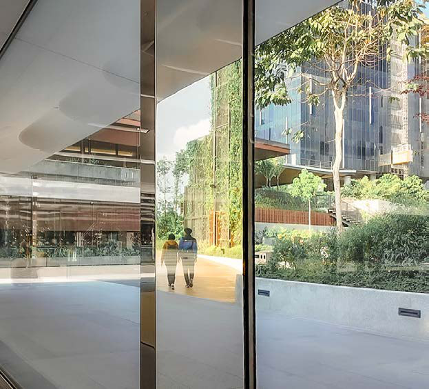

03
People
People news from across the business, including:
From project floor to strategy room
From Update Asia to General Manager for Singapore and Malaysia, Shan Nathan leads with hands-on MEP roots.
Mind over money
As Commercial Director, Jaymee Recto champions buildability-led procurement for precise delivery.
Line by line, pipe by pipe
Nuno Rio Tinto is turning first wins into a pipeline in Bangkok.

04
Features
Old bones, new beats
Mint's work in Singapore's heritage spaces, and how ACMV, power and life-safety systems are woven into conserved buildings.
21 Keppel: stripped back, powered forward
A full services replacement behind a conserved facade, floor by floor.
05
Technology
Low Voltage, High Stakes
The quiet layer that decides whether a building actually works.